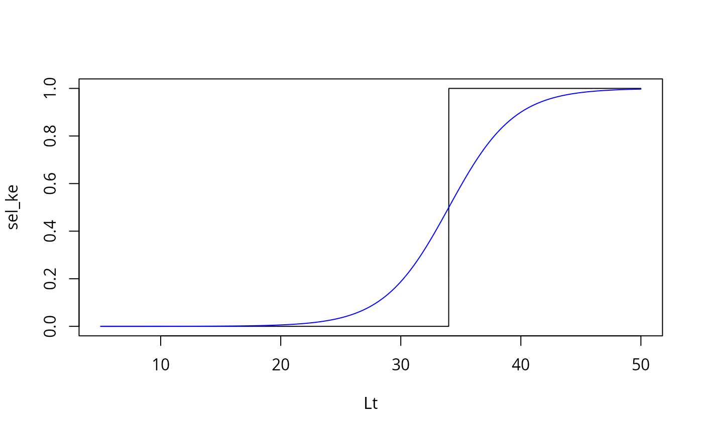
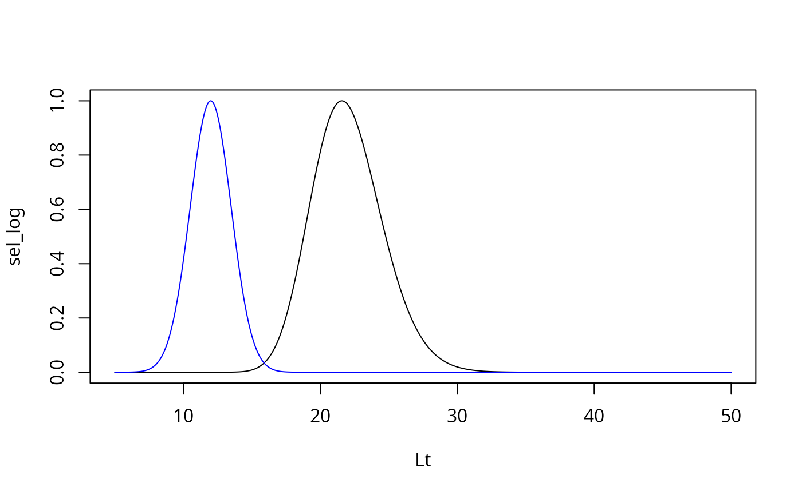

Based on a few parameters, this function estimates the fraction per length group retained in the net. Different selection curves can be used for the estimation.
Arguments
- s_list
a list with selectivity parameters dependent on the type of selection curve:
selecTypetype of selection curve used for estimation (options: "knife_edge", "trawl_ogive", "lognormal", "normal_fixed"),Lclength-at-first-capture (also called L50),meshSizesa vector with mesh sizes in increasing order,select_p1selectivity parameter 1 (see Millar and Holst (1997)),select_p2selectivity parameter 2 (see Millar and Holst (1997)),L75length at which individuals are caught with a probability of 75
- Lt
a vector with lengths corresponding to age classes
- Lc
length-at-first-capture (Default: NA)
Details
This function is embedded within predict_mod. selecType
"knife_edge" only requires a Lc value. "trawl_ogive" requires a Lc (L50) and
a L75 value. "lognormal" requires two mesh sizes, an estimate of mu and of sigma.
"normal_fixed" requires two mesh sizes with an estimate of the selection factor (SF) and an
estimate of sigma.
References
Millar, R. B., Holst, R. (1997). Estimation of gillnet and hook selectivity using log-linear models. ICES Journal of Marine Science: Journal du Conseil, 54(3), 471-477.
Sparre, P., Venema, S.C., 1998. Introduction to tropical fish stock assessment. Part 1. Manual. FAO Fisheries Technical Paper, (306.1, Rev. 2). 407 p.
Examples
# create list with selectivity information
select.list <- list(selecType = 'knife_edge',
Lc = 34, L75 = 37, tc = 5, meshSizes = c(60,80),
select_p1 = 2.7977, select_p2 = 0.1175)
# create vector with mid lengths
Lt <- seq(5, 50, 0.01)
# knife edge selectivity
sel_ke <- select_ogive(select.list, Lt)
# trawl ogive selectivity
select.list$selecType = "trawl_ogive"
sel_to <- select_ogive(select.list, Lt)
plot(Lt, sel_ke, type = 'l')
lines(Lt, sel_to, col = 'blue')

# Gillnet selectivity ("lognormal" and "normal_fixed")
select.list$selecType <- "lognormal"
sel_log <- select_ogive(select.list, Lt)
select.list$selecType <- "normal_fixed"
select.list$select_p1 <- 0.2
select.list$select_p2 <- 1.5
sel_nf <- select_ogive(select.list, Lt)
plot(Lt, sel_log, type = 'l')
lines(Lt, sel_nf, col = 'blue')
